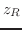

Next: Vibration Sensors that Do Up: Tamara Smyth Previous: A Brief Overview of
While there are several implementations for lasers, all designs are based on the principle of optical feedback. An easily visualized case is the gas laser. In gas lasers, the resonance is produced in a halogen tube which is periodically excited and relaxed electrically. During the relaxation part of this cycle, the gas mixture releases photons, which are initially scattered in all directions. The component frequencies of this light are limited by the properties of the transition bandwidth of the gases used. Either end of the tube is affixed with high reflectance mirrors, one or both of which can also transmit light. Prior to reaching the mirrors, the light passes through angled polarizing filters, which only permit the emission of light whose  -field is parallel to the plane-of-incidence. [15, p.564]
-field is parallel to the plane-of-incidence. [15, p.564]
Because of the phase-aligning effect of the boundaries in the cavity, light in this tube behaves like vibration in a solid object with two free ends. For reference, the case of a solid object with a single free end was discussed in section 1.6. In the present case, the minimum round-trip length the light must traverse before emission is , if is the length of the tube. Light at this frequency would constitute the first longitudinal cavity mode. Note that these are not longitudinal waves, as only transverse waves are possible. A given tube theoretically has an infinite number of these modes, at integer multiples of the fundamental, however, these must coincide with the transition bandwidth of the material in order to be emitted.[15, p.558]
In addition to longitudinal modes, the light inside the tube can exhibit standing waves that are transverse to the tube's axis as well. These modes are called Transverse Electric and Magnetic modes, or for short. indeces refer to the mode number for each axis of symmetry, and prescribe much of the beam's behavior on exiting the tube. Depending on the construction of the laser, these irradiance profiles can be either rectangularly symmetric (Hermite-Gaussian),
Typical lasers exhibit several of these modes simultaneously. This is possible because modes are energetically orthogonal (cf. 1.6). Mixed-mode beams are generally more tolerant to microscopic impurities on the lenses or mirrors, and therefore sometimes desirable for specific tasks. However, the irradiance profile which best minimizes divergence from the collinear regime--due to diffraction--is the Gaussian distribution, equation (2.4.3). [23, p. 13]
The Airy disk is a reasonable place to start characterizing the irradiance profiles of monochromatic beams: 84% of the irradiance may be localized this way. Another 7% may be localized within the second null of the bessel function. However, the width of such beams is not constant, and so measurements which take into account only the width at the aperture fail to completely characterize the beam.[23, p. 2]
A Gaussian, fundamental-mode (), non-aberrant laser beam differs from the cylinder implied by such measurements, and also from the cone implied by ray tracing. These spatial distortions amount to a hyperbolic change in radius over the propagation length, of the form:[15, p. 562]
A complete characterization of the ideal fundamental-mode beam merely requires a knowledge of the length over which the cross sectional area doubles, from the minimum. This range is called the Rayleigh range , and is, equivalently, the region where radius grows from to
. From , we may infer all other spatial parameters of an ideal beam. Thus, the Rayleigh range is an extremely important aspect of the beam, given by[15, p. 562]
An ideal fundamental-mode beam will also have variations in the curvature of its wavefronts. This measure is given by the beam's radius of curvature, , expressed as a function of :[23, p. 12]
We can also determine the phase-shift accumulated across the beam as a function of :[23, p. 12]
The full angular divergence,  , is the largest angle developed by the beam on either side of the axis. Once again, this angle is asymptotically approached in the far positive and negative fields. This limit is given by [23, p. 12]
, is the largest angle developed by the beam on either side of the axis. Once again, this angle is asymptotically approached in the far positive and negative fields. This limit is given by [23, p. 12]
The above equations (2.4.4) (2.4.5) (2.4.6) & (2.4.7) must be adjusted for the case of mixed-mode beams. To do this, we consider that the given combination of higher-order modes are related to a fundamental mode, embedded Gaussian beam, which may or may not be mixed into the given beam. We posit that the diameter of this embedded Gaussian beam is proportional to that of the given beam at all points . This ratio is . By custom, the values of the mixed-mode beam are capitalized, and
 . Noting that , and making both substitutions into our equations (2.4.4) (2.4.6) & (2.4.8), gives us another set of equations that characterize the mixed-mode parameters:[23, p. 13]
. Noting that , and making both substitutions into our equations (2.4.4) (2.4.6) & (2.4.8), gives us another set of equations that characterize the mixed-mode parameters:[23, p. 13]
Equation (2.4.7) cannot apply to the mixed-mode case in a straightforward way, because our Gaussian beam had only one frequency component, whereas the mixed-mode beam ostensibly has more. The value used to denote this relationship is , because it is an invariant of the beam, and unchanged by optical elements.[23, p. 15]
joe 2014-01-09